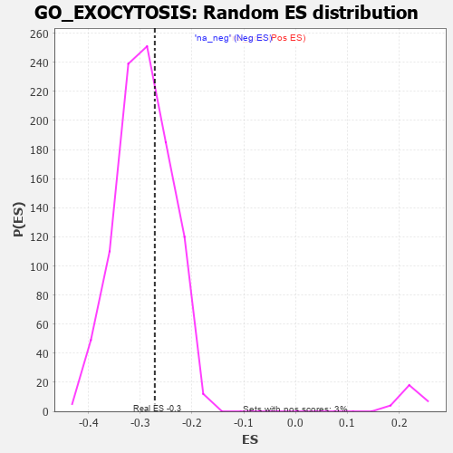

| | | Dataset | 7d |
| Phenotype | NoPhenotypeAvailable |
| Upregulated in class | na_neg |
| GeneSet | GO_EXOCYTOSIS |
| Enrichment Score (ES) | -0.27171326 |
| Normalized Enrichment Score (NES) | -0.92763823 |
| Nominal p-value | 0.6508754 |
| FDR q-value | 0.9288481 |
| FWER p-Value | 1.0 |
Table: GSEA Results Summary
 Fig 1: Enrichment plot: GO_EXOCYTOSIS
Fig 1: Enrichment plot: GO_EXOCYTOSIS
Profile of the Running ES Score & Positions of GeneSet Members on the Rank Ordered List
| PROBE | GENE SYMBOL | GENE_TITLE | RANK IN GENE LIST | RANK METRIC SCORE | RUNNING ES | CORE ENRICHMENT | | 1 | SYT2 | | | 8 | 5.577 | 0.0558 | No |
| 2 | TGFB3 | | | 49 | 2.654 | 0.0776 | No |
| 3 | RAC2 | | | 60 | 2.442 | 0.1012 | No |
| 4 | GLB1 | | | 125 | 1.416 | 0.1074 | No |
| 5 | DGAT1 | | | 171 | 1.146 | 0.1133 | No |
| 6 | FOXF1 | | | 176 | 1.136 | 0.1243 | No |
| 7 | PYGB | | | 183 | 1.114 | 0.1349 | No |
| 8 | NSF | | | 243 | 0.947 | 0.1370 | No |
| 9 | HGF | | | 276 | 0.870 | 0.1417 | No |
| 10 | PLD1 | | | 381 | 0.716 | 0.1356 | No |
| 11 | ILF2 | | | 579 | 0.603 | 0.1164 | No |
| 12 | FAF2 | | | 680 | 0.566 | 0.1093 | No |
| 13 | XRCC6 | | | 694 | 0.560 | 0.1134 | No |
| 14 | PPIE | | | 842 | 0.521 | 0.0998 | No |
| 15 | PYGL | | | 882 | 0.510 | 0.0999 | No |
| 16 | EXOC3 | | | 918 | 0.503 | 0.1006 | No |
| 17 | STX17 | | | 940 | 0.497 | 0.1029 | No |
| 18 | SNX19 | | | 1146 | 0.454 | 0.0812 | No |
| 19 | PSMD7 | | | 1152 | 0.454 | 0.0852 | No |
| 20 | PSMD2 | | | 1181 | 0.450 | 0.0861 | No |
| 21 | EXOC1 | | | 1403 | 0.409 | 0.0619 | No |
| 22 | P2RY1 | | | 1416 | 0.407 | 0.0645 | No |
| 23 | TIMP2 | | | 1478 | 0.394 | 0.0607 | No |
| 24 | QSOX1 | | | 1550 | 0.382 | 0.0554 | No |
| 25 | SRP14 | | | 1606 | 0.373 | 0.0521 | No |
| 26 | BACE1 | | | 1673 | 0.360 | 0.0473 | No |
| 27 | ABR | | | 1812 | 0.335 | 0.0330 | No |
| 28 | FMR1 | | | 1816 | 0.334 | 0.0360 | No |
| 29 | AP1M1 | | | 1853 | 0.327 | 0.0347 | No |
| 30 | PSMD6 | | | 1858 | 0.326 | 0.0375 | No |
| 31 | EXOC2 | | | 1927 | 0.317 | 0.0320 | No |
| 32 | ARMC8 | | | 1961 | 0.312 | 0.0309 | No |
| 33 | BRSK2 | | | 1979 | 0.308 | 0.0319 | No |
| 34 | LRRC7 | | | 2080 | 0.294 | 0.0220 | No |
| 35 | SNF8 | | | 2119 | 0.288 | 0.0201 | No |
| 36 | SYK | | | 2186 | 0.278 | 0.0144 | No |
| 37 | MLEC | | | 2221 | 0.273 | 0.0128 | No |
| 38 | YPEL5 | | | 2302 | 0.259 | 0.0052 | No |
| 39 | REST | | | 2308 | 0.259 | 0.0072 | No |
| 40 | ANO6 | | | 2339 | 0.255 | 0.0059 | No |
| 41 | MIF | | | 2357 | 0.252 | 0.0063 | No |
| 42 | HUWE1 | | | 2506 | 0.225 | -0.0105 | No |
| 43 | MANBA | | | 2514 | 0.225 | -0.0091 | No |
| 44 | YKT6 | | | 2571 | 0.217 | -0.0141 | No |
| 45 | QPCT | | | 2591 | 0.215 | -0.0143 | No |
| 46 | VPS4A | | | 2654 | 0.205 | -0.0202 | No |
| 47 | PPIA | | | 2754 | 0.190 | -0.0310 | No |
| 48 | MAGT1 | | | 2780 | 0.186 | -0.0323 | No |
| 49 | SCFD1 | | | 2783 | 0.185 | -0.0307 | No |
| 50 | FER | | | 2803 | 0.183 | -0.0313 | No |
| 51 | PA2G4 | | | 2840 | 0.177 | -0.0341 | No |
| 52 | CAND1 | | | 2845 | 0.177 | -0.0328 | No |
| 53 | CDK13 | | | 2944 | 0.158 | -0.0438 | No |
| 54 | RAB10 | | | 2952 | 0.157 | -0.0431 | No |
| 55 | BTK | | | 2958 | 0.156 | -0.0422 | No |
| 56 | TLN1 | | | 3030 | 0.145 | -0.0498 | No |
| 57 | PROS1 | | | 3070 | 0.141 | -0.0534 | No |
| 58 | CHP1 | | | 3089 | 0.138 | -0.0543 | No |
| 59 | SYT8 | | | 3115 | 0.135 | -0.0561 | No |
| 60 | ACLY | | | 3149 | 0.130 | -0.0591 | No |
| 61 | RAB4B | | | 3157 | 0.129 | -0.0586 | No |
| 62 | AP1G1 | | | 3210 | 0.121 | -0.0641 | No |
| 63 | PRDX4 | | | 3214 | 0.120 | -0.0633 | No |
| 64 | RAB8A | | | 3319 | 0.102 | -0.0756 | No |
| 65 | DDX3X | | | 3388 | 0.091 | -0.0834 | No |
| 66 | AP2A2 | | | 3433 | 0.085 | -0.0882 | No |
| 67 | SYTL1 | | | 3460 | 0.083 | -0.0907 | No |
| 68 | HGS | | | 3476 | 0.080 | -0.0918 | No |
| 69 | CDK5 | | | 3480 | 0.080 | -0.0914 | No |
| 70 | FES | | | 3501 | 0.077 | -0.0932 | No |
| 71 | EXOC5 | | | 3574 | 0.064 | -0.1018 | No |
| 72 | CBL | | | 3621 | 0.056 | -0.1071 | No |
| 73 | SYT11 | | | 3732 | 0.036 | -0.1209 | No |
| 74 | HTR1B | | | 3745 | 0.035 | -0.1221 | No |
| 75 | RAB18 | | | 3886 | 0.013 | -0.1400 | No |
| 76 | UBR4 | | | 3992 | -0.006 | -0.1534 | No |
| 77 | ACTN1 | | | 4050 | -0.016 | -0.1606 | No |
| 78 | PDXK | | | 4054 | -0.016 | -0.1608 | No |
| 79 | CHID1 | | | 4099 | -0.023 | -0.1662 | No |
| 80 | EXOC8 | | | 4120 | -0.026 | -0.1685 | No |
| 81 | SYT12 | | | 4172 | -0.037 | -0.1747 | No |
| 82 | SYNJ1 | | | 4173 | -0.038 | -0.1743 | No |
| 83 | EXOC4 | | | 4182 | -0.039 | -0.1749 | No |
| 84 | VPS11 | | | 4202 | -0.041 | -0.1770 | No |
| 85 | TIMP1 | | | 4209 | -0.043 | -0.1773 | No |
| 86 | SYT17 | | | 4310 | -0.061 | -0.1895 | No |
| 87 | CD109 | | | 4325 | -0.064 | -0.1907 | No |
| 88 | LIN7B | | | 4370 | -0.071 | -0.1956 | No |
| 89 | RALA | | | 4416 | -0.079 | -0.2006 | No |
| 90 | LRRK2 | | | 4467 | -0.087 | -0.2061 | No |
| 91 | ERP44 | | | 4482 | -0.091 | -0.2070 | No |
| 92 | NPC2 | | | 4498 | -0.093 | -0.2080 | No |
| 93 | STX2 | | | 4562 | -0.108 | -0.2150 | No |
| 94 | SYT4 | | | 4590 | -0.116 | -0.2173 | No |
| 95 | RAB21 | | | 4620 | -0.122 | -0.2198 | No |
| 96 | BRI3 | | | 4635 | -0.125 | -0.2203 | No |
| 97 | RAP1B | | | 4706 | -0.140 | -0.2279 | No |
| 98 | DEGS1 | | | 4747 | -0.148 | -0.2315 | No |
| 99 | RAB5C | | | 4752 | -0.149 | -0.2305 | No |
| 100 | RAB14 | | | 4784 | -0.155 | -0.2329 | No |
| 101 | MYO5A | | | 4787 | -0.155 | -0.2316 | No |
| 102 | PCLO | | | 4793 | -0.156 | -0.2306 | No |
| 103 | WDR1 | | | 4824 | -0.163 | -0.2328 | No |
| 104 | CNN2 | | | 4828 | -0.163 | -0.2316 | No |
| 105 | OSTF1 | | | 4864 | -0.170 | -0.2343 | No |
| 106 | RAB24 | | | 4868 | -0.171 | -0.2330 | No |
| 107 | CLU | | | 4889 | -0.174 | -0.2338 | No |
| 108 | VAMP8 | | | 4905 | -0.179 | -0.2339 | No |
| 109 | XRCC5 | | | 4946 | -0.187 | -0.2371 | No |
| 110 | EXOC7 | | | 4948 | -0.188 | -0.2353 | No |
| 111 | AOC1 | | | 4993 | -0.197 | -0.2390 | No |
| 112 | PDPK1 | | | 5043 | -0.207 | -0.2432 | No |
| 113 | RAP2C | | | 5073 | -0.218 | -0.2447 | No |
| 114 | DRD2 | | | 5088 | -0.221 | -0.2442 | No |
| 115 | ITSN1 | | | 5094 | -0.222 | -0.2426 | No |
| 116 | MMP9 | | | 5108 | -0.227 | -0.2420 | No |
| 117 | DOC2B | | | 5113 | -0.229 | -0.2402 | No |
| 118 | STK10 | | | 5130 | -0.233 | -0.2398 | No |
| 119 | KCMF1 | | | 5160 | -0.239 | -0.2411 | No |
| 120 | ENPP4 | | | 5189 | -0.245 | -0.2422 | No |
| 121 | RIMS2 | | | 5272 | -0.265 | -0.2501 | No |
| 122 | RAB7A | | | 5302 | -0.271 | -0.2511 | No |
| 123 | CD9 | | | 5319 | -0.277 | -0.2503 | No |
| 124 | IST1 | | | 5442 | -0.305 | -0.2629 | No |
| 125 | FRK | | | 5451 | -0.307 | -0.2608 | No |
| 126 | RAB9B | | | 5489 | -0.316 | -0.2623 | No |
| 127 | TRIM9 | | | 5526 | -0.327 | -0.2636 | No |
| 128 | SYTL5 | | | 5540 | -0.331 | -0.2619 | No |
| 129 | PGM1 | | | 5593 | -0.342 | -0.2651 | No |
| 130 | VPS45 | | | 5618 | -0.350 | -0.2646 | No |
| 131 | PSMD1 | | | 5674 | -0.367 | -0.2680 | Yes |
| 132 | CD63 | | | 5680 | -0.370 | -0.2648 | Yes |
| 133 | DGKI | | | 5725 | -0.384 | -0.2666 | Yes |
| 134 | TLR2 | | | 5761 | -0.395 | -0.2671 | Yes |
| 135 | VAMP7 | | | 5777 | -0.399 | -0.2649 | Yes |
| 136 | LAMP1 | | | 5796 | -0.404 | -0.2631 | Yes |
| 137 | SNX4 | | | 5834 | -0.415 | -0.2637 | Yes |
| 138 | ATG7 | | | 5858 | -0.420 | -0.2624 | Yes |
| 139 | CDK16 | | | 5869 | -0.425 | -0.2593 | Yes |
| 140 | RAB13 | | | 5870 | -0.425 | -0.2550 | Yes |
| 141 | CAP1 | | | 5935 | -0.447 | -0.2587 | Yes |
| 142 | VAPA | | | 5939 | -0.449 | -0.2545 | Yes |
| 143 | SURF4 | | | 5951 | -0.455 | -0.2513 | Yes |
| 144 | ACTN2 | | | 5960 | -0.458 | -0.2476 | Yes |
| 145 | SYT9 | | | 5992 | -0.469 | -0.2468 | Yes |
| 146 | HVCN1 | | | 6034 | -0.482 | -0.2472 | Yes |
| 147 | RAC1 | | | 6036 | -0.484 | -0.2424 | Yes |
| 148 | VAMP3 | | | 6043 | -0.487 | -0.2382 | Yes |
| 149 | DBNL | | | 6084 | -0.501 | -0.2383 | Yes |
| 150 | MMP25 | | | 6086 | -0.501 | -0.2333 | Yes |
| 151 | PGM2 | | | 6137 | -0.515 | -0.2345 | Yes |
| 152 | ROCK1 | | | 6152 | -0.520 | -0.2310 | Yes |
| 153 | SYTL3 | | | 6160 | -0.523 | -0.2265 | Yes |
| 154 | GYG1 | | | 6210 | -0.539 | -0.2274 | Yes |
| 155 | MVP | | | 6223 | -0.543 | -0.2234 | Yes |
| 156 | SYTL4 | | | 6304 | -0.578 | -0.2278 | Yes |
| 157 | NIT2 | | | 6365 | -0.603 | -0.2293 | Yes |
| 158 | APEH | | | 6393 | -0.613 | -0.2266 | Yes |
| 159 | PRDX6 | | | 6396 | -0.615 | -0.2206 | Yes |
| 160 | RALB | | | 6399 | -0.617 | -0.2145 | Yes |
| 161 | SYT15 | | | 6472 | -0.650 | -0.2172 | Yes |
| 162 | VAMP2 | | | 6525 | -0.672 | -0.2170 | Yes |
| 163 | ARF1 | | | 6583 | -0.701 | -0.2172 | Yes |
| 164 | VWF | | | 6593 | -0.706 | -0.2112 | Yes |
| 165 | RAB5A | | | 6655 | -0.741 | -0.2115 | Yes |
| 166 | VPS18 | | | 6659 | -0.743 | -0.2043 | Yes |
| 167 | CPLX1 | | | 6684 | -0.753 | -0.1997 | Yes |
| 168 | PAK1 | | | 6691 | -0.757 | -0.1928 | Yes |
| 169 | OLA1 | | | 6706 | -0.765 | -0.1868 | Yes |
| 170 | GSK3B | | | 6719 | -0.768 | -0.1805 | Yes |
| 171 | DOK3 | | | 6751 | -0.786 | -0.1765 | Yes |
| 172 | GIPC1 | | | 6819 | -0.826 | -0.1767 | Yes |
| 173 | VPS41 | | | 6850 | -0.841 | -0.1720 | Yes |
| 174 | HEXB | | | 6894 | -0.864 | -0.1687 | Yes |
| 175 | DNM1L | | | 6963 | -0.913 | -0.1682 | Yes |
| 176 | CCR2 | | | 7003 | -0.939 | -0.1636 | Yes |
| 177 | MYH10 | | | 7048 | -0.966 | -0.1595 | Yes |
| 178 | PTPRB | | | 7122 | -1.010 | -0.1586 | Yes |
| 179 | CFTR | | | 7143 | -1.030 | -0.1507 | Yes |
| 180 | SYT1 | | | 7148 | -1.033 | -0.1407 | Yes |
| 181 | TMX3 | | | 7158 | -1.040 | -0.1312 | Yes |
| 182 | COTL1 | | | 7166 | -1.046 | -0.1215 | Yes |
| 183 | PTPRJ | | | 7180 | -1.054 | -0.1124 | Yes |
| 184 | OTOF | | | 7198 | -1.069 | -0.1037 | Yes |
| 185 | GRN | | | 7319 | -1.194 | -0.1070 | Yes |
| 186 | PLAC8 | | | 7355 | -1.223 | -0.0990 | Yes |
| 187 | KCNB1 | | | 7444 | -1.327 | -0.0968 | Yes |
| 188 | CALM1 | | | 7567 | -1.499 | -0.0973 | Yes |
| 189 | TRPV6 | | | 7569 | -1.502 | -0.0821 | Yes |
| 190 | TRPM2 | | | 7680 | -1.712 | -0.0788 | Yes |
| 191 | ADCY1 | | | 7695 | -1.752 | -0.0628 | Yes |
| 192 | GRIK5 | | | 7792 | -2.044 | -0.0543 | Yes |
| 193 | ANK1 | | | 7815 | -2.146 | -0.0353 | Yes |
| 194 | CALM3 | | | 7869 | -2.525 | -0.0164 | Yes |
| 195 | PSMD3 | | | 7907 | -2.887 | 0.0082 | Yes |
Table: GSEA details [plain text format]

Fig 2: GO_EXOCYTOSIS: Random ES distribution
Gene set null distribution of ES for GO_EXOCYTOSIS